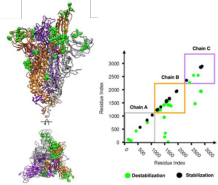

ABOUT ME
Science and Research
Rodrigo A. Moreira
https://orcid.org/0000-0002-7605-8722
ONGOING PROJECTS
Here are the ongoing project I'm participating
OUR RESEARCH
Here are some of my latest research topics. Click on the figures to get more details.
Applied Topology, Topological data analysis, Topological energy and dynamics
Details Details DetailsDetailsDetailsDetails Details Details Details Details Details Details Details
SARS-CoV-2, Spike Protein, Molecular Dynamics

-
DOI: 10.1039/d0nr03969a
- Quantitative determination of mechanical stability in the novel coronavirus spike protein
-
DOI: 10.1038/s41467-021-27325-1
- Molecular insights into receptor binding energetics and neutralization of SARS-CoV-2 variants
-
DOI: 10.3390/ma13235362
- Characterization of Structural and Energetic Differences between Conformations of the SARS-CoV-2 Spike Protein
Details Details DetailsDetailsDetailsDetails Details Details Details Details Details Details Details
- DOI: 10.1039/d0nr03969a - Quantitative determination of mechanical stability in the novel coronavirus spike protein
- DOI: 10.1038/s41467-021-27325-1 - Molecular insights into receptor binding energetics and neutralization of SARS-CoV-2 variants
- DOI: 10.3390/ma13235362 - Characterization of Structural and Energetic Differences between Conformations of the SARS-CoV-2 Spike Protein
Protein Interface Stability
Details Details DetailsDetailsDetailsDetails Details Details Details Details Details Details Details
Coarse-Grain modeling, Cellulose Fibrils, MARTINI 3

-
DOI: 10.3390/ijms23158505
- Molecular Insight into the Self-Assembly Process of Cellulose Iβ Microfibril
-
DOI: 10.3390/molecules27030976
- Martini 3 Model of Cellulose Microfibrils: On the Route to Capture Large Conformational Changes of Polysaccharides

-
DOI: 10.1007/978-1-0716-1546-1_16
- Assessing the Stability of Biological Fibrils by Molecular-Scale Simulations
Details Details DetailsDetailsDetailsDetails Details Details Details Details Details Details Details
- DOI: 10.3390/ijms23158505 - Molecular Insight into the Self-Assembly Process of Cellulose Iβ Microfibril
-
DOI: 10.3390/molecules27030976
- Martini 3 Model of Cellulose Microfibrils: On the Route to Capture Large Conformational Changes of Polysaccharides
- DOI: 10.1007/978-1-0716-1546-1_16 - Assessing the Stability of Biological Fibrils by Molecular-Scale Simulations
Old works, Hamiltonian model, Exact diagonalization, Quantum Chemistry
-
DOI: 10.1016/j.cplett.2019.04.023
- Quantification of molecular orbitals based on projection operators: Methodological development and applications to basicity prediction of organic compounds in the gas phase.
-
DOI: 10.1021/acs.jctc.7b00930
- Energy Gaps of Polyradicals from an Effective and Transferable Hamiltonian with through-Bond Interactions
-
DOI: 10.1007/s13538-017-0535-7
- On the separability of the extended molecule: Constructing the best localized molecular orbitals for an organic molecule bridging two model electrodes.
- DOI: 10.1016/j.cplett.2019.04.023 - Quantification of molecular orbitals based on projection operators: Methodological development and applications to basicity prediction of organic compounds in the gas phase.
- DOI: 10.1021/acs.jctc.7b00930 - Energy Gaps of Polyradicals from an Effective and Transferable Hamiltonian with through-Bond Interactions
- DOI: 10.1007/s13538-017-0535-7 - On the separability of the extended molecule: Constructing the best localized molecular orbitals for an organic molecule bridging two model electrodes.
WHERE I WORK
Basque Center for Applied Mathematics
Bilbao, Basque Country, Spain
Phone: +34 946 56 78 42
http://www.bcamath.org/en/people/razevedo
Phone: +34 946 56 78 42
http://www.bcamath.org/en/people/razevedo
Swing by for a cup of .